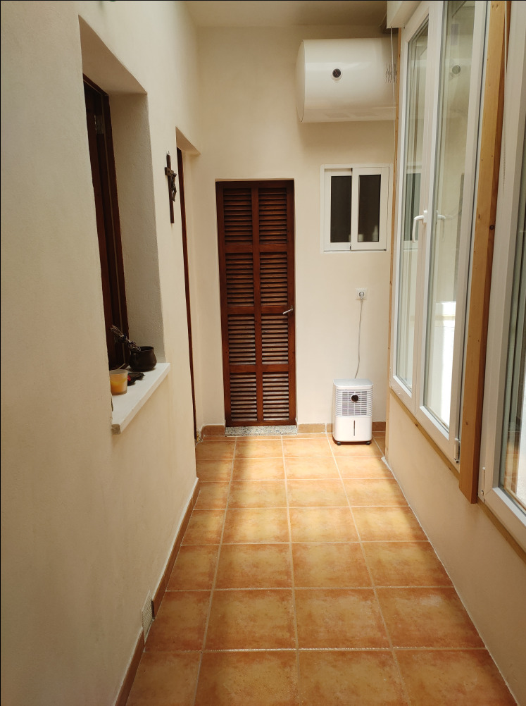
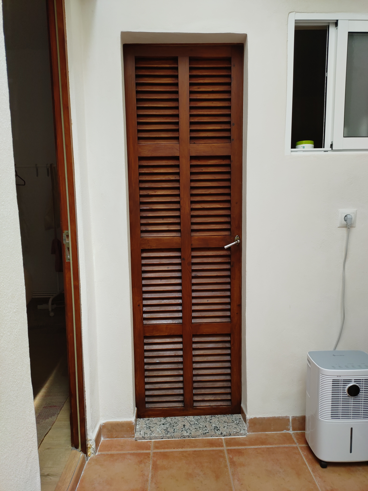

Bilder








Porto Cristo · Mallorca
69 m² · 3 Zimmer · Balkon
Nur 3 Gehminuten vom Strand
Entdecken Sie diese stilvolle und vollständig renovierte Wohnung im Herzen von Porto Cristo, einem der beliebtesten Küstenorte an der Ostküste Mallorcas.
Die Immobilie bietet ca. 69 m² Wohnfläche und überzeugt durch ihre offene Raumgestaltung, ihre außergewöhnliche Helligkeit sowie ihre hochwertige Renovierung.
Ursprünglich in mehrere Räume aufgeteilt, wurde die Wohnung zu einem großzügigen Wohnkonzept umgestaltet, das Wohn-, Ess- und Küchenbereich harmonisch miteinander verbindet.
Große Fensterflächen sorgen den ganzen Tag über für viel Tageslicht und schaffen eine freundliche und einladende Wohnatmosphäre.


Porto Cristo zählt zu den beliebtesten Küstenorten im Osten Mallorcas. Die Kombination aus Hafen, Strand, Restaurants und ganzjähriger Infrastruktur macht den Ort sowohl für Eigennutzer als auch für Investoren besonders attraktiv.


Nur 3 Gehminuten
Zentrum Porto Cristo
Große Fenster & offenes Design
Komplett renoviert
🏖️ 3 Minuten zum Strand
⚓ Hafen fußläufig
🍽️ Restaurants & Cafés in der Nähe
🛒 Einkaufsmöglichkeiten nah
🚌 Gute Verbindung nach Palma
🕳️ Nähe Drachenhöhlen
🎾 Nähe Rafa Nadal Academy
Ganzjährig nutzbar
Perfekte Lage am Meer
Hohe Nachfrage in der Region
📲 Besichtigungen ausschließlich per WhatsApp
Antwort meist innerhalb von 24 Stunden
Keine telefonischen Anrufe